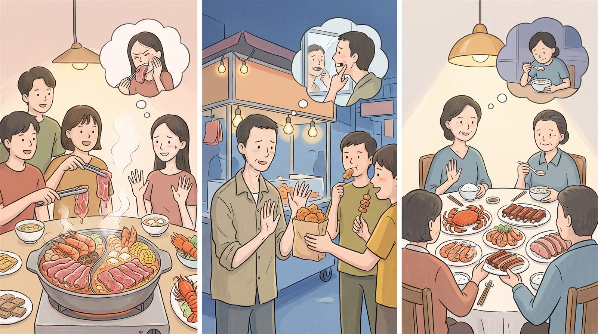
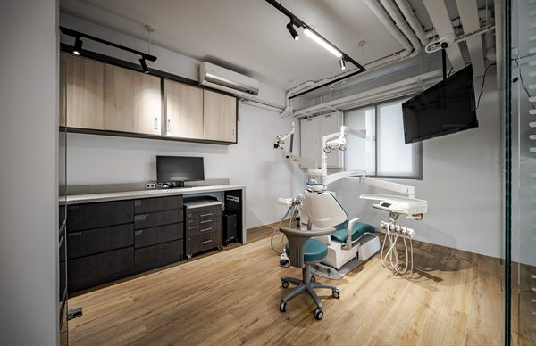
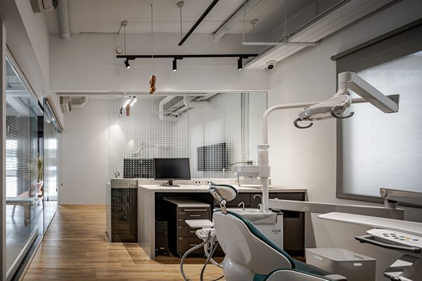

3 位醫師・1 篇文章
牙齒好像該好好整理了 —— 可是從哪裡開始？
缺了好幾年，只能用另一邊咬。
補過的、缺的、鬆的，不只一顆。
想弄好，又怕是一大筆錢。
問過幾個地方，說法都不一樣。
要整理的話，順序大概是這樣
看全口缺一邊，一直靠另一邊撐著用。
打底牙周和蛀牙先處理，地基要穩。
恢復功能補、假牙、植牙，方式不只一種。
目標都吃些什麼、以後想吃什麼，看能到哪。
按療程每一步確認過再往下，該調整就調整。
整理好，吃得順、用得久 —— 部定專科醫師做過全口評估，幫你安排治療計畫。

缺一顆牙不只是缺一顆牙。旁邊的牙會倒、對面的牙會長長、齒槽骨會流失。三種重建方式各自的原理、代價與限制。
上架 2026/06/02 ・ —次瀏覽
這一科目前還沒有文章。
這一科目前沒有駐診醫師。
本頁為一般口腔衛教資訊，不能取代臨床診斷。實際狀況需經檢查後由醫師評估。
國定假日與各科特別門診請來電確認。

